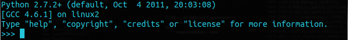
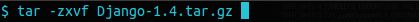
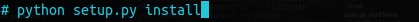
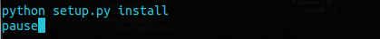

Instalação(){
Dicas
Por: Yassin Nurmahomed
Python Como Pré-requisito
Como o Django é um framework para python, é necessário que este esteja instalado. Recomenda-se a instalação da versão 2.6 ou 2.7 do python devido as incompatibilidades da versão 3.0. Estas versões incluem o banco de dados SQLite então não é preciso montar um. Faça o download do python em python.org. Após a instalação, para verificar se ela teve sucesso, digite “python” na interface de linha de comando do seu sistema. A saída será semelhante a:

Baixando e Instalando o Django
Navegue para a página de downloads do django e baixe o tarball com a versão mais recente. Tarball é um tipo de arquivo compactado com a extensão “tar.gz” que precisa de um programa de descompressão para ser aberto. No windows pode ser usado o 7-Zip. No Linux use o comando:

Depois de descompactado o arquivo, no diretório criado execute o script de instalação, lembrando que no linux é necessário o ter privilégios elevados, isto pode ser feito usando sudo antes do comando:

Alternativamente, no windows, pode-se criar um arquivo de extensão bat com os comandos:

Salve o arquivo e execute-o com um duplo-click.
Djangostack
O Djangostack simplifica bastante o processo de instalação, desenvolvimento e implantação de aplicações em django fornecendo versões do servidor Apache, MySQL, PostgreSQL, Phyton e django e todas as dependências requeridas. Basta fazer o download do instalador para o seu sistema, seja ele Windows, Linux ou Mac OS e seguir as instruções. No final do processo tem se um sistema para desenvolvimento em django completamente funcional. Os programas oferecidos pelo Djangostack não interferem com os outros já instalados no seu sistema, podem ser instaladas várias versões do stack sem causar conflitos entre elas. O Djangostack pode ser baixado em: Bitnami.org
}